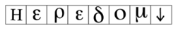

115. BÖLÜM
Kardeşler arasında Heredom olarak bilinen Mabet Evi daima, Amerika’daki masonik İskoç Riti’nin en değerli mücevheri olmuştu. Piramidimsi, dik eğimli çatısıyla bu binaya hayali bir İskoç dağının ismi verilmişti. Ama Mal’akh buradaki hazinenin hayali olmadığını biliyordu.
Yer burası, diye düşündü. Yolu Mason Piramidi gösterdi.
Eski asansör yavaşça üçüncü kata çıkarken Mal’akh, Franklin Karesi’ni kullanarak yeniden düzenlediği sembolleri yazdığı kâğıdı çıkardı. Şimdi tüm Yunan harşeri ilk satıra çıkmıştı... ve yanlarında basit bir sembol vardı.

Mesaj bundan daha açık olamazdı.
Mabet Evi’nin altında.
Heredom
Kayıp Kelime burada bir yerde.
Mal’akh yerini tam olarak nasıl bulacağını bilmese de cevabın tablodaki diğer sembollerde gizli olduğundan emindi. Şansı vardı ki, Mason Piramidi ile bu binanın sırlarını çözmekte Peter Solomon’dan daha fazla yardımı dokunacak biri olamazdı. Üstadı Muhterem’in kendisi.
Tekerli sandalyesinde çırpınmaya devam eden Peter, ağzındaki tıkacın ardından boğuk sesler çıkarıyordu.
Mal’akh, “Katherine için endişelendiğini biliyorum,” dedi. “Ama bitti sayılır.”
Mal’akh için son, ansızın gelmiş gibiydi. Acı çektiği, plan yaptığı, beklediği ve araştırma yaptığı yılların ardından... o an sonunda gelmişti.
Asansör yavaşlamaya başlayınca, içini heyecan kapladığını hissetti.
Kabin sarsılarak durdu.
Bronz kapılar kayarak açıldı ve Mal’akh karşılarında duran görkemli salona baktı. Kare şeklindeki geniş salon, sembollerle donatılmış ve tavandaki pencereden içeri giren ay ışığıyla yıkanmıştı.
Mal’akh, aynı noktaya geri döndüm, diye düşündü.
Tapınak Odası. Peter Solomon ile kardeşlerinin Mal’akh’ı aptal gibi kendi aralarına aldıkları yer burasıydı. Artık masonların en büyük sırrı -kardeşlerden bazılarının var olduğuna bile inanmadığı sır- yeryüzüne çıkmak üzereydi.
Bodrumdan yukarı çıkan tahta rampada Sato ile diğerlerinin peşinden giderken kendini hâlâ sarhoş gibi hisseden Langdon, “Hiçbir şey bulamayacak,” dedi. “Gerçekten kelime diye bir şey yok. Hepsi mecazi, Antik Gizemlerin bir sembolü.”
İki ajanın koluna girerek destek olduğu Katherine de arkasından geliyordu.
Grup, metal kapı enkazının üzerinden ve ekseni etrafında dönen tablo bölümünden dikkatle geçip, oturma odasına girdi. Langdon, Sato’ya, Kayıp Kelime’nin farmasonluğun en eski sembollerinden biri olduğunu anlattı. İnsanların artık deşifre edemediği esrarengiz bir dilde yazılmış, tek bir kelimeydi. Antik Gizemler gibi Kayıp Kelime de gizli gücünü ancak onu deşifre edecek kadar aydınlanmış kişilere açıklayacağını vaat ediyordu. Langdon, “Kayıp Kelime’yi bulup, anlamını çözebilirsen... Antik Gizemlerin sana açılacağı rivayet edilir,” dedi.
Sato dönüp omzunun üstünden baktı. “O halde bu adamın bir kelimenin peşinde olduğuna inanıyorsunuz?”
Langdon söylediklerinin ilk başta saçma geleceğini kabul ediyordu ama bu, pek çok soruya cevap veriyordu. “Bakın, ben büyü törenleri konusunda uzman değilim,” dedi. “Ama bodrum duvarlarındaki dokümanlardan... ve Katherine’in anlattığı, adamın başının üstündeki dövme yapılmamış kısımdan anladığım kadarıyla... bu adam Kayıp Kelime’yi bulup, vücuduna yazmayı ümit ediyor.”
Sato, grubu yemek odasına yönlendirdi. Dışarıdaki helikopterin pervaneleri gürültüyle çalışıyordu.
Langdon yüksek sesle düşünerek konuşmaya devam etti. “Eğer bu adam gerçekten Antik Gizemlerin gücünü çözmek üzere olduğuna inanıyorsa, ona göre Kayıp Kelime’den daha güçlü başka hiçbir sembol olamaz. Eğer bulup, başının tepesine yazabilirse -ona göre kutsal bir yer- kendisinin kusursuz biçimde donatıldığına ve tören için hazır olduğuna...” Peter’ı bekleyen kaderi düşünen Katherine’in benzinin attığını görünce sustu.
Helikopter pervanesinin gürültüsünden sesi güçlükle duyulan Katherine, “Ama Robert,” dedi. “Bu iyi haber, öyle değil mi? Peter’ı kurban etmeden önce Kayıp Kelime’yi başının tepesine yazmak istiyorsa, daha vaktimiz var demektir. Kelimeyi buluncaya kadar Peter’ı öldürmeyecektir. Ve eğer kelime yoksa...”
Ajanlar Katherine’i bir sandalyeye oturturlarken Langdon açıklamaya çalıştı. “Ne yazık ki Peter hâlâ senin kanamadan öleceğini sanıyor. Seni kurtarmanın tek yolunun bu deliyle işbirliği yapmak olduğunu düşünüyor... ve sanıyorum onun Kayıp Kelime’yi bulmasına yardımcı olacaktır.”
Katherine, “Ne olmuş yani?” diye üsteledi. “Eğer kelime yoksa...”
Katherine’in gözlerinin içine bakan Langdon, “Katherine,” dedi. “Eğer senin öldüğüne inansaydım ve eğer birisi bana Kayıp Kelime’yi bularak seni kurtarabileceğimi söyleseydi, o zaman bu adama bir kelime bulurdum -herhangi bir kelime- ve verdiği sözü tutması için Tanrı’ya dua ederdim.”
Yan odadan bir ajan, “Başkan Sato!” diye bağırdı. “Şunu bir görseniz iyi olacak!”
Yemek odasından aceleyle çıkan Sato, ajanlarından birinin yatak odasından aşağı indiğini gördü. Elinde sarı bir peruk taşıyordu. Bu da ne?
Ajan, peruğu uzatırken, “Adamın takma saçı,” dedi. “Giysi dolabında bulduk. Yakından bakın.”
Sarı peruk Sato’nun beklediğinden daha ağırdı. Başa oturan kısmı, kalın bir jelden yapılmış gibiydi. Tuhaf bir şekilde, peruğun alt kısmından bir kablo çıkıyordu.
Ajan, “Kafa derisine oturan jel torbalı batarya,” dedi. “Saçın içine gizlenen fiber optik mini kameraya enerji sağlar.”
“Ne?” Sato, sarı saçların arasına görünmeyecek şekilde yerleştirilmiş minik kamera lensini buluncaya kadar peruğu parmaklarıyla yokladı. “Bu şey, bir gizli kamera mı?”
Ajan, “Video kamera,” dedi. “Görüntüleri şu küçük sert kartta depoluyor.” Peruğun başa oturan kısmına yerleştirilmiş pul büyüklüğündeki kare bir silikonu gösterdi. “Harekete duyarlı olmalı.”
Sato, Tanrım, diye düşündü. Bu şekilde yapmış olmalı.
“Yaka çiçeği” havasındaki bu gizli kamera, başkanın bu gece yüz yüze geldiği krizde anahtar rol oynamıştı. Bir süre daha baktıktan sonra ajana geri verdi.
“Evi aramaya devam edin,” dedi. “Bu adamla ilgili bulabileceğiniz her türlü bilgiyi istiyorum. Dizüstü bilgisayarının kayıp olduğunu biliyoruz, hareket halindeyken onu dış dünyaya nasıl bağlamayı planlıyor öğrenmek istiyorum. Çalışma odasında bize donanımıyla ilgili ipucu sağlayabilecek her türlü kullanma kılavuzunu, kabloyu, her şeyi arayın.”
“Peki efendim.” Ajan koşturarak gitti.
Gitme vakti geldi. Sato helikopter pervanesinin son gücüyle döndüğünü duyabiliyordu. Simkins’in, hedefin gittiğine inandıkları bina hakkında bilgi almak için Warren Bellamy’yi getirdiği yemek odasına gitti.
Mabet Evi.
Franklin Meydanı’ndan beri battaniyeye sarılı olduğu halde gözle görülür derecede titreyen Bellamy, “Ön kapılar içeriden kilitlidir,” dedi. “İçeri girmenin tek yolu arka giriş. Tuş takımına sadece kardeşlerin bildiği bir PIN kodu girilir.”
Notlar alan Simkins, “Bu PIN ne?” diye sordu.
Ayağa kalkamayacak kadar güçsüz görünen Bellamy, dişlerinin arasından giriş kodunu söyledikten sonra, “1733 On Altıncı Sokak, ama binanın arkasındaki park alanından girin. Bulması biraz güç olabilir...” diye ekledi.
Langdon, “Yerini biliyorum,” dedi. “Gittiğimizde size gösteririm.”
Simkins başını iki yana salladı. “Siz gelmiyorsunuz profesör. Bu askeri bir...”
Langdon, “Ne diye gelmiyormuşum!” diye çıkıştı. “Peter orada! Ve o bina bir labirenttir! Size yolu gösterecek biri olmazsa, Tapınak Odası’na girmeniz on dakikanızı alır!”
Bellamy, “Doğru söylüyor,” dedi. “Orası bir labirent. Bir asansör var ama eski ve gürültülüdür, ayrıca Tapınak Odası’ndan net görülür. Sessizce girmek istiyorsanız, yürüyerek çıkmalısınız.”
Langdon, “Yolunuzu asla bulamazsınız,” diye uyardı. “O arka kapıdan girip sırasıyla Tören Salonu, Şeref Salonu, Orta Sahın, Atriyum, Büyük Merdiven...”
Sato, “Yeter,” dedi. “Langdon geliyor.”